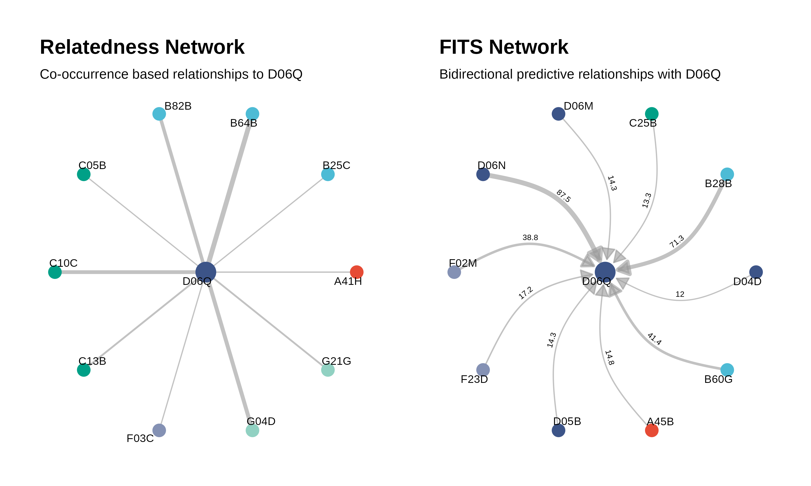

3 The interconnectedness between regions and technologies
3.1 Methodological Motivation
Traditional relatedness frameworks model diversification through symmetric co-occurrence matrices and linear aggregation of relatedness density (Hausmann and Hidalgo 2011). However, as established in our problem statement, these constructs suffer from three structural limitations: (1) symmetry assumptions that obscure directional dependencies between technologies, (2) linear aggregation that loses granular information about technology-specific requirements, and (3) noise when technologies outnumber regions.
We address these limitations by replacing traditional measures with a machine learning training strategy based on the Random Forest algorithm (RF). Specifically, we use RF to generate: (1) Feature Importance Technology Space (FITS) following Fessina et al. (2024), analogous to the mainstream Technology Space. FITS captures directional, hierarchical technology relationships, replacing symmetric relatedness measures; and (2) predicted probabilities (technological potential) following Albora et al. (2023), analogous to relatedness density. The technological potential estimates region-specific feasibility of technology adoption given the region’s own technological portfolio, replacing linear relatedness density. This approach enables the contextualization of diversification strategies by accounting simultaneously for technology-specific characteristics, regional knowledge infrastructure, and the broader non-linear interconnectedness between regions and technologies that traditional measures cannot adequately capture.
Before detailing our methodology and how we leverage the contributions in Fessina et al. (2024) and Albora et al. (2023), we will briefly situate this approach within the REC literature. Essentially, REC formalizes the empirical observation that shared input requirements (knowledge, resources, capabilities) determine diversification feasibility (Hidalgo et al. 2018; Hidalgo 2021). While this framework have proven valuable for policy (Zaccaria et al. 2018; E and A 2021), deriving granular, context-specific implications remains challenging (Hidalgo 2023; Li and Neffke 2024). Recent work on unrelated diversification (Flávio L. Pinheiro et al. 2022; Boschma et al. 2023), geographic inequalities (Flavio L. Pinheiro et al. 2025; Hartmann et al. 2017), and emerging technologies (Lee et al. 2018; Fessina et al. 2024) highlights the need for methodologies that capture contextual nuances beyond path dependency identification which we will elaborate on in subsequent sections.
Our approach is a response to the nuances expressed in the literature. But in order to highlight adequately our work we must first elaborate on the mainstream approach conceptually, methodologically and its empirical implications which we briefly outlined in the introduction. From there we expand on the mainstream approach and construct ours conceptually, mathematically and showcase our training strategy. To this end, we also provide a brief example on how the mainstream approach and the machine learning approach to modeling the technology space compare. For the sake of clarity and consistency we will establish our notation system and the main definition in this paragraph and use them in the subsequent sections and chapter in this dissertation unless we specify otherwise.
We consider the following sets:
- \(\mathcal{T} = \{t_i\}_{i=1}^{N_T}\): set of technologies
- \(\mathcal{R} = \{r_i\}_{i=1}^{N_R}\): set of regions
- \(\mathcal{Y} = \{y_i\}_{i=1}^{N_Y}\): set of years
- \(\mathcal{C} = \{c_i\}_{i=1}^{N_C}\): set of technology categories
- \(\mathcal{K} = \{\kappa_i\}_{i=1}^{N_K}\): set of countries
These sets are mirrored by the European Patent Office data (1978-2021) classified at the 4-digit IPC level, yielding 641 distinct technologies across 345 NUTS2 regions in 34 European countries. IPC classifications provide hierarchical structure: section (letter, we also refer to this as categories), class (two digits), subclass (letter). For example, F16H encompasses Section F (Mechanical engineering), Class 16 (engineering elements for mechanical power transmission), and Subclass H (gearing systems). We supplement patent data with Eurostat regional socio-economic indicators detailed in subsequent sections.
We quantify regional specialization using the Revealed Comparative Advantage (Balassa 1965). Although originally designed for trade data, this metric has been widely adopted in innovation geography literature. Following the nomenclature in P.-A. Balland and Rigby (2017), we refer to it as Revealed Technological Advantage (RTA) in our patent data context. The RTA measures relative specialization, enabling simultaneous capture of expertise depth and portfolio diversity. Despite critiques regarding patent-based applications (P. Balland and Boschma 2019; Diodato et al. 2023), RTA aligns with our objective of capturing meaningful technology relationships through machine learning rather than raw co-occurrence. The RTA for region \(r\) in technology \(t\) during year \(y\) is defined as:
\[ \text{RTA}_{r,t,y} = \frac{\displaystyle\frac{X_{r,t,y}}{\sum_{t'} X_{r,t',y}}} {\displaystyle\frac{\sum_{r'} X_{r',t,y}}{\sum_{r',t'} X_{r',t',y}}} = \frac{X_{r,t,y}\,\sum_{r',t'}X_{r',t',y}} {\bigl(\sum_{t'}X_{r,t',y}\bigr)\,\bigl(\sum_{r'}X_{r',t,y}\bigr)} \] Where, \(X_{r,t,y}\): patent count for region \(r\) in technology \(t\) during year \(y\)
For each year \(y\), we construct the RTA matrix \(\mathbf{R}^{(y)}\) with entries \(\text{RTA}_{r,t,y}\):
\[ \mathbf{R}^{(y)} = \bigl[\text{RTA}_{r,t,y}\bigr]_{r=1,\dots,N_{R}}^{t=1,\dots,N_{T}} \]
These yearly matrices form the foundation for all subsequent modeling. We then binarize specialization for classification tasks:
\[ z_{r,t,y} \;=\; \begin{cases} 1 & \text{if }\text{RTA}_{r,t,y}\ge1 \\ 0 & \text{otherwise} \end{cases} \]
where \(z_{r,t,y} = 1\) indicates region \(r\) has comparative advantage (specialization) in technology \(t\) at year \(y\).
To further elaborate, let’s consider \(c_{t,t'}\), the count of patents containing both technologies \(t\) and \(t'\) (\(t\neq t'\)) at a given time period, such that \(t, t' \in \mathcal{T}\), and \(c_{t}\), \(c_{t'}\) denote the total patent counts for each class individually.
In the following we will begin by outlining how the REC literature approach relatedness, how it’s calculated and discuss in detail different technical contributions and their limitations. We will then present our approach and detail our methodological and conceptual contribution in response to these limitations.
3.2 The mainstream approach
3.2.4 Structural Limitations of Linear Aggregation
The predictive success of relatedness density is not in question. The limitations concern what it cannot reveal and how its structure constrains interpretation.
Linear aggregation obscures combinatorial information. Relatedness density sums pairwise relationships without regard to their interactions. This implicitly assumes that having two related technologies is simply twice as beneficial as having one—capabilities combine additively. Yet capabilities may interact in ways that linear summation cannot capture. Certain combinations may be more than the sum of their parts, creating complementarities where the joint presence of technologies \(A\) and \(B\) enables technology \(C\) in ways that neither alone provides. Other combinations may be redundant, contributing less than their individual relatedness values would suggest. By reducing many-body relationships to independent two-body terms, linear aggregation discards precisely the combinatorial information that may distinguish feasible diversification paths from infeasible ones (Tacchella et al. 2023). Empirically, prediction models that capture many-product interactions substantially outperform density-based predictions, suggesting that linear aggregation loses significant information (Albora et al. 2023).
Noise compounds through aggregation. The dimensional mismatch and spurious associations affecting pairwise co-occurrence estimates do not disappear when aggregated into relatedness density—they compound. Summing noisy pairwise values produces a noisy aggregate. The normalisation by total relatedness provides some correction but cannot recover signal that was lost at the pairwise level. For regions with portfolios concentrated in rare technologies, where pairwise estimates are least reliable, relatedness density inherits and potentially amplifies these estimation problems.
Frequency of entry conflates observation with feasibility. The empirical regularity that higher relatedness density associates with higher entry probability is often interpreted as evidence that related diversification is more feasible and therefore should be prioritised. But this inference conflates observed frequency with success rate as emphasised in C. Pinheiro (2025). We observe which entries occurred, not which were attempted; the denominator—attempts—remains unobserved. Related diversification may appear more common because it is attempted more frequently, perhaps precisely because existing frameworks recommend it, rather than because it succeeds more often when attempted. Coniglio et al. (2021) addresses precisely this issue and shows that related diversification attempts succeeded 80% in Germany in contrast to 40% in the United States and France. Moreover, the observed product and technology spaces may themselves reflect past policies promoting related diversification (Andreoni and Chang 2019), creating circularity when used to justify future policy.
3.2.5 Implications for Contextualisation
The limitations identified above are not independent—they compound. Noisy co-occurrence estimates feed into symmetric matrices that are then linearly aggregated, producing context-free measures whose predictive success may reflect structural properties of the data (nestedness, diversification hierarchies) as much as genuine capability-based relationships. The resulting framework provides a supply-side instrument: it identifies what regions might produce given their existing portfolios, while remaining silent on demand dynamics, competitive pressures, and the institutional conditions that shape whether capability-based proximity translates into actual entry (C. Pinheiro 2025; Andreoni and Chang 2019).
This supply-side orientation has consequences. When applied to policy, relatedness-based recommendations may systematically favour already-diversified regions whose dense portfolios generate high relatedness density across many targets, while offering limited guidance to less-diversified regions whose sparse portfolios produce low density values regardless of strategic potential. The concern that such recommendations reinforce rather than ameliorate path dependency—locking peripheral regions into constrained trajectories while core regions accumulate further advantages—has been explicitly raised in recent literature examining regional inequality and the distributional consequences of relatedness-based strategies (Flavio L. Pinheiro et al. 2025; Mealy and Coyle 2022; Hidalgo 2023).
The issue is not that relatedness is empirically wrong—the predictive regularity is robust—but that the measures as currently constructed cannot inform us about the conditions under which relatedness matters more or less, about which technologies serve as stepping stones toward others, or about how regional knowledge infrastructure, national ecosystems, and spatial factors moderate diversification possibilities. Addressing these limitations requires reconstructing the core methodological constructs in ways that relax the problematic assumptions while preserving the fundamental insight that prior capabilities shape future possibilities. This reconstruction motivates the machine learning approach developed in the following sections.
3.3 An Alternative Approach: Machine Learning for Contextualised Relatedness
The limitations outlined above—dimensional mismatch producing noisy correlations, symmetric measures obscuring directional dependencies, and linear aggregation discarding interaction effects—are not merely technical inconveniences. They represent fundamental obstacles to using relatedness for prediction and policy. If co-occurrence methods perform no better than trivial baselines, as demonstrated in Tacchella et al. (2023), then their assessment of diversification feasibility offers insufficient guidance for strategic decisions. This motivates a shift from descriptive correlation to predictive modelling.
3.3.1 Machine Learning as Prediction Framework
The core reframing is methodological: rather than inferring relatedness from co-occurrence patterns and hoping this correlates with future outcomes, we directly model diversification as a prediction problem. This follows recent work positioning relatedness estimation within supervised learning frameworks (Tacchella et al. 2023; Albora et al. 2023; Fessina et al. 2024). The shift offers three advantages.
First, it provides a falsifiable evaluation standard. Co-occurrence measures proliferate without systematic comparison—proximity, association strength, minimum conditional probability, and numerous variants coexist with no principled basis for selection. Out-of-sample prediction performance offers an objective criterion: methods that better forecast actual diversification outcomes are, by definition, better capturing whatever underlying relatedness structure matters for real transitions (Albora et al. 2023). This addresses the circularity where relatedness is inferred from outcomes and then used to explain those same outcomes.
Second, prediction-based approaches can capture the many-body correlations that density-based measures discard. As Tacchella et al. (2023) emphasise, describing diversification paths as sums of binary relatedness relationships is an oversimplification. A region’s probability of developing technology \(i\) depends not just on pairwise similarities but on the full configuration of its existing portfolio—which combinations are present, which are absent, and how these interact. Tree-based algorithms learn precisely these complex conditional patterns.
Third, the framework naturally accommodates the asymmetric, directed relationships that symmetric co-occurrence measures cannot represent. When we train separate models for each target technology, we obtain directional importance scores: technology \(t\) may strongly predict entry into technology \(i\) while \(i\) weakly predicts entry into \(t\). This asymmetry reveals hierarchical structure—prerequisites, enabling technologies, and developmental sequences—that bidirectional similarity metrics obscure.
We apply this framework through two complementary constructs:
Technological Potential estimates \(p_{r,t,y}\), the probability that region \(r\) develops specialisation in technology \(t\) by year \(y\), given its existing portfolio. This replaces relatedness density. Rather than linearly summing symmetric co-occurrence frequencies, we predict region-specific feasibility using the full structure of past portfolios. The measure captures non-linear interactions and regional heterogeneity that additive approaches miss.
Feature Importance Technology Space (FITS) extracts directional dependencies \(I_{t \to t'}\) between technologies from the trained models. This replaces symmetric technology networks. Instead of co-occurrence frequencies, we identify which technologies predict others’ future adoption—and crucially, which do not predict in the reverse direction. The resulting asymmetric network reveals hierarchical technological structure invisible to symmetric measures.
3.3.2 Why Random Forest
Among supervised learning approaches, tree-based ensemble methods—particularly Random Forest—offer properties well-suited to relatedness estimation. We briefly outline these before presenting the technical details.
High-dimensional sparse data. Regional technology portfolios are high-dimensional (hundreds of technology classes) and sparse (most regions specialise in few technologies). Tree-based methods handle this naturally through recursive partitioning: each split considers only a subset of features, and the hierarchical structure means irrelevant technologies simply do not appear in decision paths. Linear methods struggle with the collinearity and sparsity typical of specialisation data; neural networks require larger samples than regional patent data typically provide.
Non-linear interactions. The recursive splitting structure captures interactions without explicit specification. If technology \(t_1\) matters for predicting \(t_3\) only when \(t_2\) is also present, this emerges naturally as a conditional split pattern. Density-based measures, by construction, cannot represent such conditionality—they assume each related technology contributes independently.
Interpretable feature importance. Unlike black-box models, Random Forests produce feature importance scores that aggregate each predictor’s contribution across all trees. These scores become the basis for FITS construction, translating prediction performance into an interpretable technology network. This maintains the explanatory value of relatedness measures while grounding them in predictive validity.
Ensemble variance reduction. Bootstrap aggregation across many trees reduces the variance that would plague individual decision trees, particularly given the moderate sample sizes (regions × years) available in patent data. The ensemble structure provides stability without sacrificing the flexibility needed to capture complex capability interactions.
The choice of Random Forest over alternatives thus reflects both practical constraints (sample size, interpretability requirements) and the specific structure of relatedness estimation (sparse, high-dimensional, interaction-rich). We now present the algorithm formally before describing our application.

3.3.3 Random Forest Algorithm
Random Forest constructs an ensemble of \(B\) decision trees through bootstrap aggregating (bagging) with random feature subsampling. Each tree \(T_b\) is built on a bootstrap sample \(\mathcal{D}_b^*\) drawn with replacement from the original dataset.
Each tree recursively partitions the feature space through binary splits. At node \(t\), we randomly select \(m\) features (typically \(m = \sqrt{p}\)) and evaluate all possible splits within this subset. For feature \(j\) and threshold \(\tau\), the split creates two child nodes: \(t_L = \{i : x_{ij} \leq \tau\}\) and \(t_R = \{i : x_{ij} > \tau\}\).
Split quality is assessed via Gini impurity:
\[G(t) = 1 - \sum_{k=0}^{1} p_k^2(t) = 2p_0(t)p_1(t)\]
where \(p_k(t) = n_k(t)/n(t)\) represents the proportion of class \(k\) observations at node \(t\). Gini impurity quantifies node heterogeneity: \(G=0\) indicates perfect purity (homogeneous class), while \(G=0.5\) indicates maximum impurity (equal class distribution). The optimal split maximises weighted impurity reduction:
\[\Delta G(j, \tau) = G(t) - \left[\frac{n(t_L)}{n(t)} G(t_L) + \frac{n(t_R)}{n(t)} G(t_R)\right]\]
Weighting by relative node size prevents trivial splits that isolate single observations into pure but uninformative leaves.
Recursive splitting continues until predefined stopping criteria: node purity (\(G=0\)), minimum node size threshold, or maximum tree depth. Terminal nodes are assigned the majority class of their constituent observations.
For prediction, observation \(\mathbf{x}\) traverses all \(B\) trees. Final classification aggregates individual tree predictions via majority voting:
\[\hat{y}(\mathbf{x}) = \text{mode}\{\hat{y}_1(\mathbf{x}), \ldots, \hat{y}_B(\mathbf{x})\}\]
Class probabilities are estimated as the proportion of trees predicting each class:
\[\hat{P}(y=1|\mathbf{x}) = B^{-1}\sum_{b=1}^{B} \mathbb{I}[\hat{y}_b(\mathbf{x})=1]\]
This probability represents empirical vote share across trees. Values near 1 indicate strong consensus for class 1 (high confidence), while values near 0.5 reflect uncertainty. Unlike parametric models, these are data-driven vote proportions rather than model-based probability estimates.
The algorithm’s effectiveness stems from variance reduction through decorrelated predictions. Bootstrap sampling and random feature selection reduce inter-tree correlation \(\rho\), yielding ensemble variance:
\[\text{Var}(\bar{y}) = \rho\sigma^2 + \frac{1-\rho}{B}\sigma^2\]
As \(B\) increases and \(\rho\) decreases, ensemble variance diminishes while maintaining the low bias of flexible tree models.
Feature importance quantifies each predictor’s contribution by aggregating Gini impurity reductions:
\[I(j) = \frac{1}{B}\sum_{b=1}^{B} \sum_{t \in T_b : v(t)=j} \Delta G(t)\]
where the sum runs over all nodes using feature \(j\) for splitting. Higher values indicate features consistently creating purer partitions. Feature importance measures predictive association rather than causal effect, and exhibits bias toward high-cardinality features and correlated predictor sets. It ranks predictive relevance but requires caution in causal interpretation.
3.3.4 Training Procedure
We follow the methodology of Fessina et al. (2024) and Albora et al. (2023), originally developed for trade data. The key innovation lies in training separate models for each technology rather than constructing a single global model. For every technology \(i \in \mathcal{T}\), we train a binary classification model where:
- Outcome: \(z_{r,i,y}\) indicates whether region \(r\) specialises in technology \(i\) at year \(y\) (RTA \(\geq 1\))
- Features: \(\{\text{RTA}_{r,t,y-\delta} : t \in \mathcal{T}, t \neq i\}\) comprises RTA values for all other technologies \(\delta\) years prior
This technology-specific approach enables each model to learn unique dependency patterns. The lag \(\delta = 4\) years balances predictive horizon with data availability, following conventions in the literature on capability accumulation (Andreoni and Chang 2019).
We predict specialisation for target years \(y_t \in \{2008, \ldots, 2018\}\) using data from 1978 onward. For each target year \(y_t\) and technology \(i\):
Training set: \[X_{\text{train}} = \{ \text{RTA}_{r,t,y} \mid y \in [1978, y_t - 2\delta], t \neq i\}\] \[Y_{\text{train}} = \{z_{r,i,y} \mid y \in [1978 + \delta, y_t - \delta]\}\]
Test set: \[X_{\text{test}} = \{ \text{RTA}_{r,t,y_t-\delta} \mid t \neq i\}\] \[Y_{\text{test}} = \{z_{r,i,y_t}\}\]
This temporal structure ensures strict separation: models predict future specialisation using only information available at the prediction date. The expanding training window incorporates historical diversification patterns while the fixed lag prevents information leakage.
The procedure yields 7,051 models (641 technologies × 11 years). Given computational constraints, we performed cross-validation on a stratified sample of four technologies (G06G, B67B, D02J, C08J) spanning different IPC sections, applying the modal optimal parameters across all models: mtry = 139, trees = 100, min_n = 38. Training was conducted in R using the Ranger package (Wright and Ziegler 2017), orchestrated via the targets pipeline (Landau 2021).
3.4 Technological Potential
Each model produces probabilities \(p_{r,i,y} = P(z_{r,i,y} = 1 \mid \text{RTA}_{r,\cdot,y-\delta})\) representing the likelihood that region \(r\) develops specialisation in technology \(i\) by year \(y\), conditional on its prior portfolio. These probabilities constitute Technological Potential—a forward-looking, region-specific measure of diversification feasibility.
The shift from correlation to prediction reframes what the measure captures. Density asks: “How similar is technology \(i\) to what region \(r\) already has?” Potential asks: “Given everything we know about how regions diversify, how likely is region \(r\) to develop technology \(i\)?” The latter question—the one relevant for policy—requires a predictive approach.
High potential (\(p_{r,t,y} \approx 1\)) indicates a region’s existing portfolio strongly predicts future specialisation—the region likely possesses necessary complementary capabilities. Low potential (\(p_{r,t,y} \approx 0\)) suggests capability gaps that make diversification unlikely under current conditions. Intermediate values reflect genuine uncertainty, often indicating that diversification is possible but contingent on factors beyond current portfolio composition.
Crucially, potential varies across regions for the same technology. Two regions with similar aggregate relatedness density may have quite different potential scores because their specific portfolio configurations interact differently with the target technology’s requirements. This variation enables analysis of how regional context—knowledge infrastructure, institutional environment, spatial position—moderates diversification feasibility.
3.5 Feature Importance Technology Space (FITS)
Traditional technology networks rely on patent citations or co-occurrence patterns, each with limitations. Citations suffer from examiner additions that may not reflect actual knowledge flows, aggregation from patent-level to technology-level that obscures directionality, and backward-looking orientation that captures historical influence rather than predictive relationships (Fessina et al. 2024). Co-occurrence networks inherit the problems outlined in our critique: symmetry, noise, and linear assumptions.
FITS addresses these by constructing an asymmetric, predictive network from the feature importance scores of our Technological Potential models. Rather than inferring relationships from co-occurrence, FITS extracts directional dependencies revealed by which technologies predict others’ future adoption.
Recall that for each technology \(i\), we trained a Random Forest model predicting \(z_{r,i,y}\) using \(\{\text{RTA}_{r,t,y-\delta} : t \neq i\}\) as features. The feature importance \(I_i(t)\) quantifies how much technology \(t\) contributes to predicting future specialisation in technology \(i\) across all regions and time periods.
We formalise FITS as a directed, weighted network \(G = (V, E, W)\) where:
- Nodes \(V = \mathcal{T}\): the set of 641 technologies
- Edges \(E\): directed connections \((t \to i)\) for all \(t, i \in \mathcal{T}, t \neq i\)
- Weights \(W_{t \to i} = I_i(t)\): feature importance of technology \(t\) in the model predicting technology \(i\)
We normalise weights within each target technology:
\[W_{t \to i} = \frac{I_i(t)}{\sum_{t' \neq i} I_i(t')}\]
ensuring incoming edge weights sum to 1 for each technology. This normalisation facilitates comparison across technologies with different overall predictability.

The defining property of FITS is asymmetry: \(W_{t \to i} \neq W_{i \to t}\) in general. This asymmetry captures hierarchical technological dependencies invisible to symmetric measures:
\(W_{t \to i} \gg W_{i \to t}\): Technology \(t\) is a prerequisite or enabler for \(i\). Expertise in \(t\) predicts future development of \(i\), but not vice versa. This pattern identifies foundational technologies and developmental sequences.
\(W_{t \to i} \approx W_{i \to t}\): Technologies are complementary peers with mutual predictive relationships, suggesting shared capability requirements or co-evolution.
\(W_{t \to i} \ll W_{i \to t}\): Technology \(i\) enables \(t\), reversing the hierarchical relationship.
This directional structure reveals technological trajectories: regions can identify which current capabilities open paths toward desired future technologies, and which apparent similarities mask asymmetric dependencies.
The contrast between co-occurrence relatedness and FITS is sharpest when examining specific technologies. Consider H01L (semiconductors) and D06Q (textile decoration).
For semiconductors, co-occurrence relatedness identifies technologies that frequently appear together in regional portfolios. Some connections are sensible: semiconductor memories (H10B), packaging technologies (B68B). But the measure also surfaces implausible links—textile decoration (D06Q), woodworking (B27H), fusion reactors (G21B)—that appear not because of genuine technological affinity but because they happen to co-occur in diverse portfolios. This is the noise problem: frequency-based aggregation treats all co-presence equally, regardless of whether it reflects shared capabilities or statistical coincidence.
FITS reveals a different structure. Rather than asking which technologies appear alongside semiconductors, it asks which technologies predict future semiconductor development—and which technologies semiconductors predict. The asymmetry is striking: strong edges flow FROM application domains (digital computing G06F, telecommunications H04L, control systems G05F) TO semiconductors, indicating these fields depend on semiconductor capabilities. Weaker reverse edges show that semiconductor expertise does not particularly predict entry into computing or telecommunications. H01L emerges as an enabling technology whose importance lies in what it makes possible rather than what leads to it.
The contrast sharpens further with D06Q (textile decoration), a sparse technology where co-occurrence produces near-total noise: elevators (B64B), timing devices (G04D), chemical production (C13B) appear simply because D06Q is rare and co-occurs randomly with whatever else rare-technology regions happen to have. FITS filters this effectively, identifying genuine textile domain relationships—sewing (D05B), textile treatment (D06M), wall coverings (D06N)—that share actual functional connections.
This example illustrates how FITS captures the functional architecture of innovation networks that co-occurrence frequencies obscure. The method’s ability to distinguish signal from statistical artifact, combined with its directional structure revealing technological hierarchies, provides the foundation for contextualised analysis of regional diversification patterns.


Technological Potential provides region-specific feasibility estimates grounded in predictive performance rather than descriptive correlation. FITS reveals the directional, hierarchical structure of technological dependencies that symmetric measures cannot represent. Together, these constructs enable the contextualised analysis our research questions require: examining how regional knowledge infrastructure, national innovation systems, and spatial factors moderate the relationship between technological characteristics and diversification outcomes.
3.6 Coherence: Bridging Technology Networks and Regional Portfolios
FITS identifies technology-to-technology relationships. Technological Potential quantifies regional diversification feasibility. Coherence bridges these levels by measuring the alignment between a technology’s position in the FITS network and a region’s existing specialization structure. In a way coherence can be viewed as sector level relatedness density.
Consider two regions, both lacking specialization in technology \(i\), both having similar potential \(p_{r,i,y}\). However, Region A specializes in technologies that are strong predictors of \(i\) (high incoming FITS edges), while Region B specializes in technologies unrelated to \(i\) in the network. Coherence captures this difference: Region A has high coherence with \(i\) (its portfolio aligns with \(i\)’s network prerequisites), while Region B has low coherence (misalignment).
This metric operationalizes the “knowledge coherence” and “cognitive proximity” concepts from innovation literature (Neffke, Henning, and Boschma 2011; Boschma 2015) using our directional network structure. It enables testing whether diversification success depends not just on potential (predicted feasibility) but on the structural fit between regional portfolios and technology network positions.
For each region \(r\), technology \(i\), and IPC category \(c\), we construct two embedding vectors capturing \(i\)’s directional network position and compare them to \(r\)’s average embeddings for technologies in category \(c\).
Technology embeddings (individual technology \(i\)):
- Incoming: \(\text{embcat\_to}_{i,c} = \frac{\sum_{t \in c} W_{t \to i}}{|\{t \in c : W_{t \to i} > 0\}|}\) (average FITS weight from category \(c\) to technology \(i\))
- Outgoing: \(\text{embcat\_from}_{i,c} = \frac{\sum_{t' \in c} W_{i \to t'}}{|\{t' \in c : W_{i \to t'} > 0\}|}\) (average FITS weight from technology \(i\) to category \(c\))
Regional average embeddings (region \(r\), category \(c\)):
- Incoming: \(\overline{\text{embcat\_to}}_{r,c} = \frac{1}{|S_{r,c}|}\sum_{t \in S_{r,c}} \text{embcat\_to}_{t,c}\) where \(S_{r,c} = \{t \in c : \text{RTA}_{r,t,y} \geq 1\}\)
- Outgoing: \(\overline{\text{embcat\_from}}_{r,c} = \frac{1}{|S_{r,c}|}\sum_{t \in S_{r,c}} \text{embcat\_from}_{t,c}\)
Coherence is the cosine similarity between technology \(i\)’s directional embeddings and region \(r\)’s average directional embeddings for category \(c\):
\[ \text{Coherence}_{r,i,c,y} = \frac{\mathbf{v}_1 \cdot \mathbf{v}_2}{||\mathbf{v}_1|| \cdot ||\mathbf{v}_2||} \]
where:
- \(\mathbf{v}_1 = [\text{embcat\_to}_{i,c}, \overline{\text{embcat\_to}}_{r,c}]\)
- \(\mathbf{v}_2 = [\text{embcat\_from}_{i,c}, \overline{\text{embcat\_from}}_{r,c}]\)
Coherence ranges from -1 to 1:
- High coherence (\(\approx 1\)): Technology \(i\)’s FITS network position (both incoming and outgoing connections to category \(c\)) closely matches the average network position of technologies in which region \(r\) specializes within category \(c\). The region’s existing capabilities align with the structural prerequisites and consequences of technology \(i\).
- Neutral coherence (\(\approx 0\)): Misalignment between technology \(i\)’s relational structure and regional specialization patterns.
- Negative coherence (\(\approx -1\)): Technology \(i\)’s network position is opposite to the region’s specialization structure (e.g., \(i\) receives inputs from categories where the region sends outputs).
3.6.1 Empirical Application
Coherence serves two roles in our empirical analysis:
Interaction with Potential: Test whether high potential translates to actual diversification only when coherence is also high (H2a: technology-specific characteristics moderated by regional knowledge coherence)
Regional Infrastructure Measure: Aggregate coherence across a region’s non-specialized technologies indicates how well the regional portfolio is “positioned” in the FITS network for future diversification (captures knowledge infrastructure quality)
By incorporating coherence, we test whether successful diversification requires not just predicted feasibility (potential) and related capabilities (traditional relatedness), but also structural alignment between regional portfolios and network prerequisites—a form of contextualization that traditional measures cannot capture.
4 Summary of Methodological Framework
Our approach replaces traditional relatedness constructs with machine learning-derived measures that enable contextualized diversification analysis:
- Technological Potential (\(p_{r,t,y}\)): Region-specific, non-linear, time-varying probabilities replace linear relatedness density
- FITS Network (\(W_{t \to t'}\)): Asymmetric, predictive dependencies replace symmetric co-occurrence-based relatedness
- Coherence (\(\text{Coherence}_{r,t,c,y}\)): Structural alignment between regional portfolios and technology network positions captures knowledge infrastructure quality
Together, these measures allow testing how diversification is contingent on regional knowledge infrastructure (RQ2), national ecosystem characteristics (RQ3), and spatial factors (RQ4) in ways that traditional relatedness frameworks cannot—addressing the core problem of contextualizing diversification strategies beyond path dependency identification.